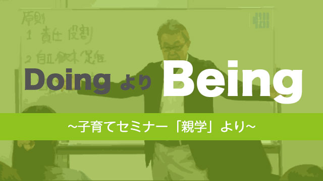
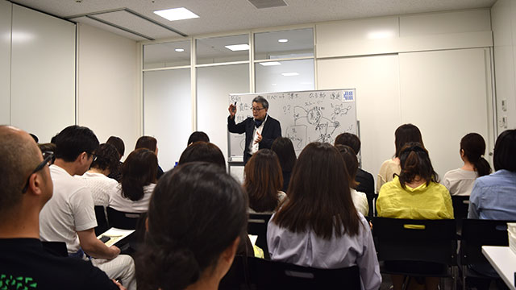

先日の日曜日「子育てセミナー」を行った。真夏のような暑い日差しにもかかわらず多くの皆さんが参加してくれたのは嬉しかった。
セミナーは題して「親学」。メインテーマは子どもを前向きにする法。
久しぶりのセミナー、そして定員いっぱいギッシリ部屋を埋め尽くした聴衆を前に私もいささか脈拍が上がる思い。会場は熱気ムンムン。子を思う親の気持ちが伝わってくる。
結局100分の予定を超えて2時間近くの話になってしまったが無事終了してホッとした。
それにしても今回の参加者は意識が高いと感じた。内容は決して簡単ではなかったにもかかわらず最後まで集中して聞いてくれたからだ。
ところで私の伝えたかったことは、まず子どもを「どうにかする」ことより親の「あり方」が重要だということ。つまりdoingよりbeing。
親のbeingが土台となって始めてdoingが有効という原理的話である。
これは子どもを手っ取り早く思い通りにしようと考える親にはまどろっこしい話でしかないし、子どもが「ヤル気になる」ノウハウなりメソッドなどを期待して来た人には退屈な話に違いない。
その上私は常識的な子育て論をかなり逸脱する方向で話を展開した。
たとえば１責任と役割では、人生は自分が創造していること（自由に創造できる）を知り、特性を生かす（天命を知る）ことで社会貢献できる。２自立欲求促進では、常識や古い価値観にとらわれず真にやりたいことを、たとえ誰もやったことのないことでもやり遂げる気概をもつこと。３自己評価を高めるでは、自分を認めること（自己受容）が他者を認めることに通じ結果として成功につながることなどを話した。
その上でこれらの3点を子どもに伝えるためには、親自らが3つの要素を体現していなければならないということを強調した。

解説の中で、潜在意識をいかにクリーニングするか脳波をアルファ波にする重要性、さらに人間は何かをしようと意思する0.5秒前にすでに脳の指令が出ている（リベット博士の0.5秒前説）など、最新の心理学や脳科学にも話が及んだ。
「それと子育ては何の関係があるのか」と思う向きもあるかも知れない。
しかし親のあり方（being）の必要性を理解してもらうにはどうしても知って欲しい知識だったのである。
私たちは潜在意識にためこんだマイナスの物事が、思考や感情そして目の前の現実をゆがめている事実になかなか気づけない。
たとえば親はよく子どもがダラダラして勉強しないから心配したりイライラすると言う。だが、心配やイライラが先にあってそれらが子どもの行動を否定的に見させているのだとしたらどうだろう。
潜在意識に心配やイライラの種があり、それが発芽した結果子どもの行動を「マイナス」と判断しているということだ。
つまり原因と結果は逆転する。むしろ原因は親であったということになる。
それが分かれば「子どもの問題」は実は「親の問題」であることが明らかになる。
だからこそ「親のあり方」すなわち親自身がこれまでの人生でためこんで来た物の見方や考え方、価値観や思い込みその他膨大な固定観念に気づきニュートラルな位置に立つことが重要なのだ。
こうして文章にしてみると、何かとてつもない小難しい話でさぞ退屈なセミナーだなと感じなくもない。
だが実際は、先にも言ったように皆さんとても興味深そうに熱心に聞いていた。自分で言うのも何だが、ユーモアも交えての解説だったし面白い「ワーク」もやってもらったりで、笑いあり「オーッ」という気づきもありで楽しめたのではないかと思う。反応が凄かった。
同時にありきあたりの「子育て論」に満足できない人が多いのだなとも感じた。
私自身、今回のような常識外の子育て論を述べることに少し迷いはあったが思い切って本音を語って良かったと思う。
色々な意味で私も学ぶことが多かったセミナー。この場を借りて参加者の皆さんに感謝したい。